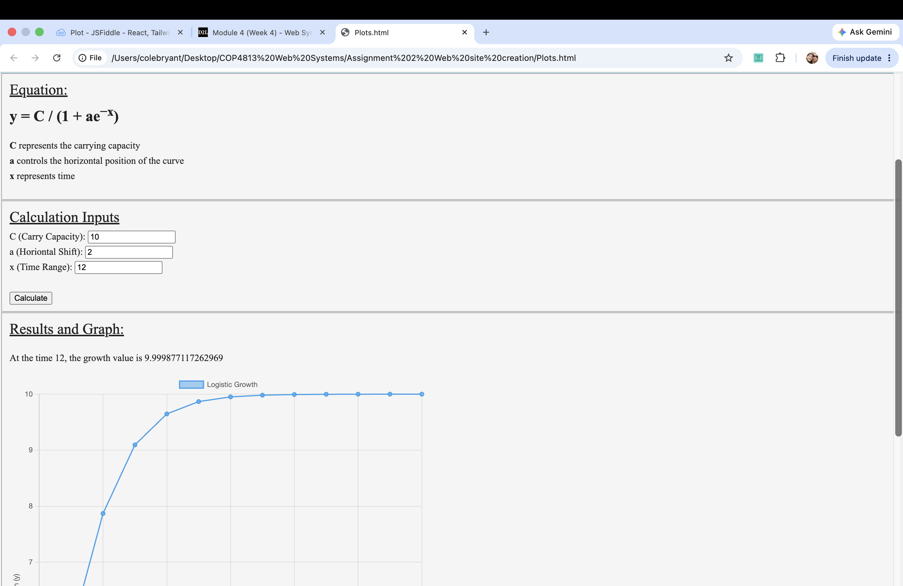
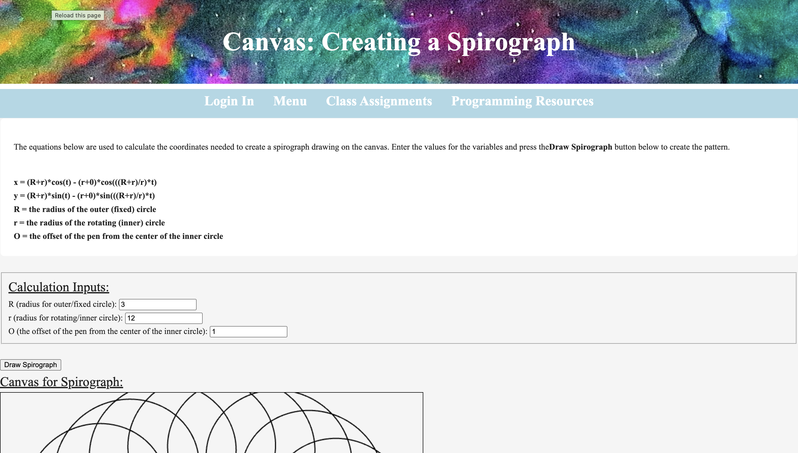

Assignments
Assignment 1 - Hello World:
Assignment 1

Description: Create a simple "Hello World" web page in Github. Ensure that is has your name as a footnote and at least one of the following: one or more picture, a link to another page, information about the page, or correct header identification in html5
Assignment 2 - Web Site:
Assignment 2

Description: Create a your own personal web page in Github. This will replace the "Hello World" site that you created in Assignment 1. This page will need to have a menu and links to your assignments you will later add over the course of the semester. Make sure yiu have an image of yourself or one that best represents your interests. Its best to think of it like your own resume you will be showing to employers.
Assignment 3 - Form:
Assignment 3

Description: Develop a input form using HTML5 and Javascript. It will then validate and collect infomration from the user. Once that is done, it will display a confirmation page that displays the information entered and allows the user to conform that the information is correct.
Ensure that the prgram as the following data:
Name(firstname, lastname)
Address(address, city, state, zip)
Phone Number(phone)
Email Address(email)
Birth Date(birthdate)
Messsage(message)
Confirmation(confirm)
Assignment 4 - Creating Plots:
Assignment 4

Description: Use any equation or series of equations that you can write in Javascript, expect linear or simple quadratic equations, to create a graphical chart. The inputs you have should correctly be calculated on your graph. As well as having your independent variables on the X axis, and dependent on the Y axis on your graph. In order to make it on your website, find a plotting library online that best matches your chosen equation.
Assignment 5 - Canvas:
Assignment 5

Description: Create a canvas and program spirograph on it. You will use the following equations to create it such as x = (R+r)*cos(t) - (r+O)*cos(((R+r)/r)*t) and y = (R+r)*sin(t) - (r+O)*sin(((R+r)/r)*t). Where R is the radius of the outer (fixed) circle, r is the radius of the rotating (inner) circle, and O is the offset of the pen from the center of the inner circle. You should have a single button to start the drawing. You could also have vaild random numbers for R, r, and O; or even have text boxes entered by the user.